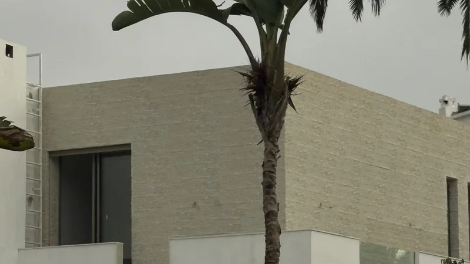
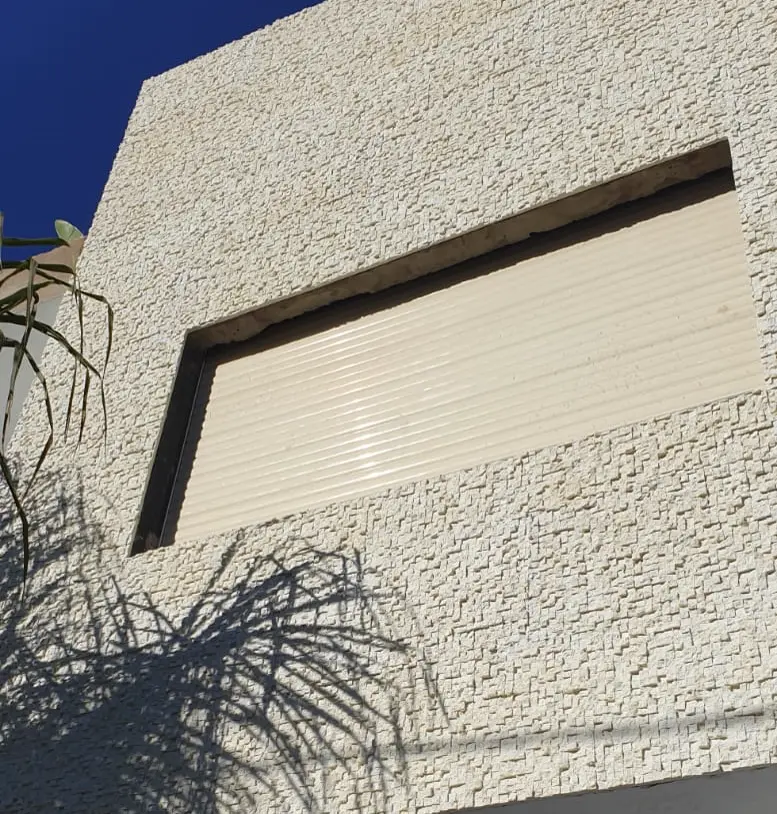

Une alternative à la pierre de Taza pour la façade et les murs
Vous aimez la pierre de Taza, son grain, ses teintes beige et grises, mais pas le chantier qui va avec : plaques lourdes, mortier, joints, traitement hydrofuge. Le Celestone™ donne l'aspect d'un mur de pierre avec des panneaux légers, collés et vissés, puis peints dans la teinte de votre choix. Comparez, puis venez toucher la matière au showroom de Casablanca.
Villa, Lido · Mattoni, beige
Pourquoi on choisit la pierre de Taza, et ce qui freine
La pierre de Taza est un calcaire marocain, beige, gris ou gris-beige, taillé en plaques et en plaquettes de parement. On la choisit pour son aspect minéral et pour son relief quand elle est éclatée ou clivée. Sur une façade ou un mur de jardin, c'est surtout cet aspect que l'on veut : un mur qui a l'air de pierre, qui tient dehors et qui vieillit bien.
Ce qui freine, c'est le chantier : des plaques lourdes à poser une à une au mortier-colle, des joints, et un traitement hydrofuge à renouveler en extérieur. C'est là que Le Celestone™ change la donne.
L'aspect de la pierre
Un relief moulé sur la pierre : pierre éclatée, lamelles, petits blocs, travertin.
Un mur qui n'est pas chargé
Un panneau Big Rock de 2,40 m × 60 cm pèse environ 3,5 kg. Il se porte à une main.
Pas de maçonnerie
Collé en cordons et vissé, sans ossature. Joints et vis disparaissent sous le mastic.
Votre teinte
Peint en Jotun dans la teinte choisie, beige ou gris comme une Taza, ou tout autre. Et il se repeint.
Pierre de Taza ou Le Celestone™ : le comparatif, critère par critère
Les deux ont leurs qualités. Le tableau les met côte à côte pour habiller une façade ou un mur.
| Critère | Pierre de Taza (plaque de 3 cm) | Le Celestone™ |
|---|---|---|
| Aspect | Pierre véritable : chaque plaque est unique. Finitions éclatée, clivée, bouchardée, adoucie… | Relief moulé sur la pierre : pierre éclatée (Big Rock), lamelles (Mattoni), petits blocs (Cubo), travertin, brique |
| Poids sur le mur | Environ 75 kg par m² pour une plaque de 3 cm (densité 2,56) | Environ 3,5 kg pour un panneau Big Rock de 2,40 m × 60 cm |
| Pose | Au mortier-colle, plaque par plaque, puis jointoiement : un chantier de maçonnerie | Collé en cordons et vissé, sans maçonnerie ni ossature ; joints et vis repris au mastic |
| Face à l'eau | Calcaire poreux : traitement hydrofuge conseillé en extérieur, à renouveler tous les 2 à 3 ans ; pas de produits acides | N'absorbe pas l'eau : aucun traitement hydrofuge à prévoir |
| Teinte | Celle de la pierre : beige, gris, gris-beige | Peint en Jotun dans la teinte choisie ; se repeint pour changer |
| Réparation | Une plaque cassée se remplace ; la nuance d'une pierre naturelle varie d'un lot à l'autre | Un choc se reprend au mastic, puis à la peinture |
| Où l'utiliser | Murs, sols, escaliers, margelles | Murs et plafonds, dedans comme dehors. Pas au sol |
| Coût | Pierre abordable à l'achat ; la pose maçonnée et le traitement pèsent dans le budget | Pose rapide, sans maçonnerie ni traitement. Le devis se compare à surface égale, pose comprise |
Données sur la pierre de Taza : fiche technique publiée par un négociant marocain (nature, densité, épaisseurs, entretien). Poids par m² calculé pour une plaque de 3 cm. Aucun prix ici : il varie trop d'un mur à l'autre (voir plus bas).
Choisissez la pierre de Taza…
pour un sol, un escalier ou une margelle, ou si vous voulez une pierre véritable et qu'un chantier de maçonnerie ne vous gêne pas.
Choisissez Le Celestone™…
pour habiller une façade ou un mur existant sans le charger, avec un chantier propre et rapide, dans la teinte de votre choix, y compris en hauteur.
Vous hésitez ?
Envoyez une photo de votre mur sur WhatsApp : nous vous renvoyons une simulation avec le modèle et la teinte proposés, sous 24 h.
Les reliefs qui remplacent la pierre
Tous se posent dedans comme dehors et se peignent dans la teinte de votre choix. Photos prises sur nos chantiers, sauf le Travertin, présenté en panneau. Toute la gamme est sur la page effet pierre.

Big Rock
L'aspect d'une pierre éclatée, en grands panneaux. Le relief le plus proche d'un parement de pierre brute.
Voir Big Rock
Mattoni
De fines lamelles de pierre empilées. En beige, il rappelle un parement de pierre claire ; en anthracite, l'ardoise.
Voir Mattoni
Cubo
Une mosaïque de petits blocs de pierre éclatée. Sous une lumière rasante, chaque bloc dessine son ombre.
Voir Cubo
Travertin
Une pierre plus douce, veinée, pour une entrée, un salon ou une façade plus sobre.
Voir au catalogueEt si la pierre ne suffit pas
Même matière, même pose : l'effet béton de Cemento et Béton Décoffrage, l'effet bois de Bois Cubo, la brique de Brick.
Des murs d'aspect pierre, sans une plaque de pierre
Des chantiers réels, photographiés sur place, où nos clients voulaient l'aspect de la pierre.


Un chantier de pose, pas un chantier de maçonnerie
Photo et simulation
Une photo du mur et votre quartier sur WhatsApp. Sous 24 h, vous voyez votre mur avec le modèle et la teinte proposés.
Visite et métré
Nous mesurons le mur, ses angles, ses ouvertures et son accès. Le devis part de là.
Pose
Chaque panneau est collé en cordons puis vissé. Joints et têtes de vis sont repris au mastic acrylique.
Peinture
Mise en teinte en Jotun, avec une acrylique pour l'extérieur. Aucun traitement hydrofuge à prévoir ensuite.
La pose filmée sur un chantier : voir la vidéo sur la page pose.
Pierre de Taza ou Le Celestone™ : comparer les budgets
Aucun tarif au m² n'est publié : chaque mur a ses mesures, sa hauteur et son accès. Pour comparer honnêtement avec un devis de pierre, comparez à surface égale, pose et finition comprises. Les critères sont détaillés sur la page prix d'un habillage de façade.
- La surface réellement habillée, ouvertures déduites.
- Le modèle : Big Rock, Mattoni, Cubo, Travertin.
- La hauteur et l'accès : rez-de-chaussée, étage, mur de clôture.
- Les découpes autour des angles et des fenêtres.
- La peinture : la teinte Jotun choisie.
Votre estimation sous 24 h
Envoyez sur WhatsApp :
- une photo du mur ou de la façade ;
- les dimensions approximatives ;
- votre quartier ou votre ville ;
- le devis de pierre que vous comparez, si vous en avez un.
Pierre de Taza ou panneau effet pierre : vos questions
Le Celestone™ ressemble-t-il à la pierre de Taza ?
Il en a l'aspect, pas la composition : le relief est moulé sur de la pierre, puis peint dans la teinte voulue, beige ou gris par exemple. Pour en juger de près, le mieux est de venir au showroom et de prendre un panneau en main.
Est-ce moins cher que la pierre de Taza ?
À l'achat, la pierre de Taza peut être abordable. La différence se fait sur le chantier : pose maçonnée, jointoiement, traitement hydrofuge à renouveler en extérieur. Le Celestone™ se colle et se visse, sans maçonnerie ni traitement. Pour comparer à surface égale, envoyez-nous la surface et une photo : l'estimation vous revient sous 24 h.
Peut-on habiller une façade existante sans la charger ?
Le panneau est léger : un Big Rock de 2,40 m × 60 cm pèse environ 3,5 kg, quand une plaque de pierre de 3 cm pèse de l'ordre de 75 kg par m². Il se colle et se visse sur toute surface plane, en règle générale. Pendant la visite de métré, nous regardons le mur avec vous.
Faut-il un traitement hydrofuge, comme sur la pierre ?
Non. Le Polymère Celestone™ n'absorbe pas l'eau. En façade, il est peint en Jotun Jotashield, une acrylique conçue pour l'extérieur.
Peut-on retrouver la teinte beige ou grise de la Taza ?
Oui. Les panneaux sont livrés en primaire, prêts à peindre, et prennent la teinte Jotun choisie. Sur nos chantiers : blanc, beige, greige, sable, olive, anthracite, noir.
Tient-il au soleil et à la pluie ?
Oui. Hydrofuge et chargé d'additifs anti-UV, il est peint avec une acrylique pour l'extérieur. Il habille déjà des façades, des murs de jardin et des murs de piscine à Casablanca et autour.
Peut-on l'utiliser au sol ou sur des marches ?
Non : Le Celestone™ habille les murs et les plafonds. Pour un sol, un escalier ou une margelle, la pierre de Taza reste le bon choix.
Dans quels quartiers posez-vous ?
Anfa, Aïn Diab, Californie, CIL, Oasis, CFC, Palmiers, Tamaris, Bouskoura et Dar Bouazza. Ailleurs, écrivez-nous : nous livrons dans tout le Maroc.
L'aspect de la pierre,
sans le chantier de la pierre
Envoyez une photo de votre façade ou de votre mur : simulation et estimation sous 24 h. Ou venez comparer les reliefs au showroom.
Showroom : 11 Rue Hounaine, Bd d'Anfa, Casablanca · Lun–Ven 10h30–13h / 15h30–19h · Sam 11h–13h